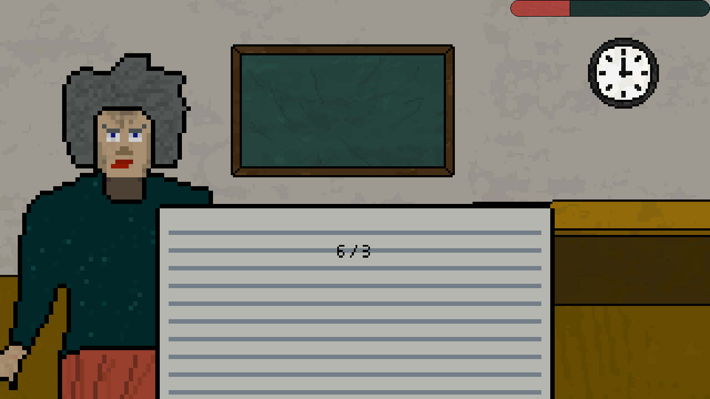

MathOrDeath is an open-source math game made in C++ using the SDL engine. It is currently only playable on Windows, but there are plans to port the game to Linux and macOS. Perhaps one day, it will also be available for Android and iOS.
You play as a student trapped inside a classroom with your math teacher. She won't let you leave for some unknown reason. You are forced to answer seemingly simple math questions, but unbeknownst to you, they get harder and harder. You do not know when this madness will end, but you continue answering, hoping to someday escape the classroom.
